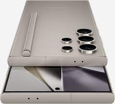
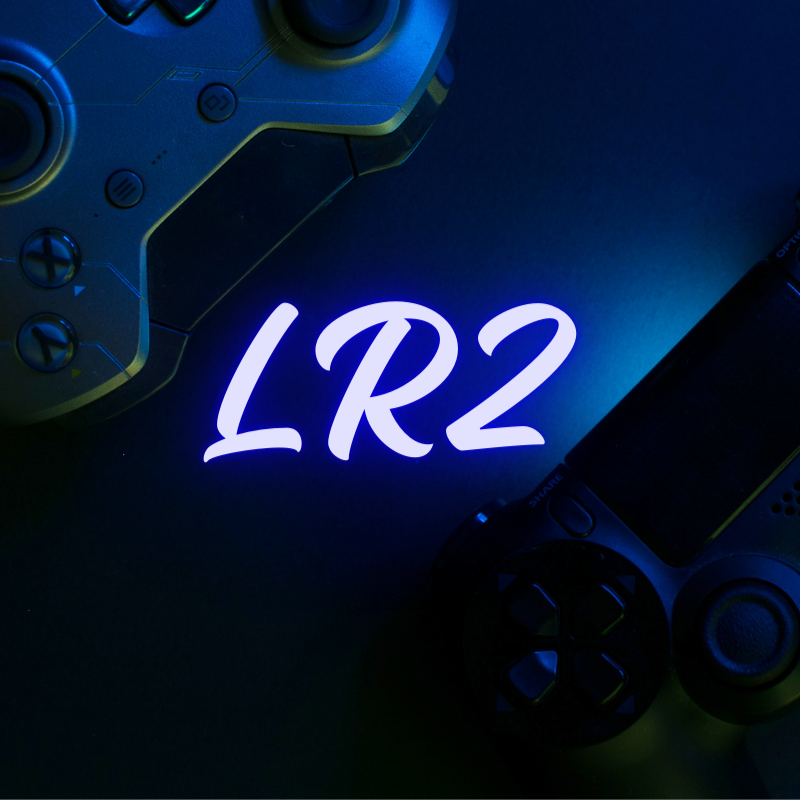
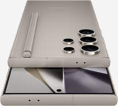

Test :
Samsung S24 Ultra:
Avec son écran Dynamic Amoled de 6.8 pouces et de 120 Hz, le S24 Ultra est armé pour être utilisé à l'extérieur en pleine journée.
Nous sommes deux passionnés (JC et Olivier) du jeu vidéo et de la tech en général. N'hésitez pas à nous suivre sur Youtube et sur Twitch.
Samsung S24 Ultra:
Avec son écran Dynamic Amoled de 6.8 pouces et de 120 Hz, le S24 Ultra est armé pour être utilisé à l'extérieur en pleine journée.